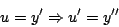
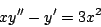
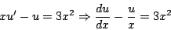
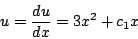
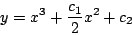

|
|
|
|
|Instituto Tecnológico de Costa Rica|Escuela de Matemática| M. Sc. Geovanni Figueroa M. |
|
|
Ausencia de la variable dependiente
Si
En tal caso, introducimos el cambio de variable

Esta sustitución transforma la ecuación 1.14 en una ecuación diferencial de primer orden
Ahora, si logramos encontrar una solución para la ecuación
1.15, podemos sustituir en ella Ejemplo Resolver la ecuación diferencial

Solución:
La variable

que es lineal. Resolviendo ésta ecuación obtenemos

e integrando

|